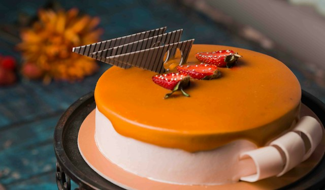

- 1 pacote de bolacha calipso
- 1 pacote de bolacha de maisena
- 2 colheres (sopa) rasas de margarina sem sal
- 1 lata de leite condensado
- 1 xícara (chá) de leite
- 3 gemas peneiradas
- 3 colheres (chá) de gelatina incolor
- 2 colheres (sopa) de água para hidratar a gelatina
- 1 caixa de chantilly pequena
- 250 g de chocolate meio amargo picado
- 1 caixa de creme de leite sem soro
Ingredientes
Creme
Cobertura
Modo de Preparo
- Antes de começar o preparo da receita, coloque no refrigerador a caixa de chantilly para que ele fique no ponto certo.
- Triture as bolachas de maisena no processador ou liquidificador até formar uma farofa, coloque em uma vasilha e acrescente a margarina, misture com as pontas do dedos, até ficar uma farofa e reserve.
- Forre as laterais de uma forma de aro removível com as bolachas calipso, em seguida acrescente a farofa feita com as bolachas de maisena, pressione um pouco com as mãos, para que ela fique bem acomodada no recipiente, reserve.
- Em uma panela coloque o leite condensado,as gemas e o leite e leve ao fogo, mexendo sempre, até adquirir consistência cremosa.
- Deixe esfriar
- Enquanto esfria, hidrate as 3 colheres de gelatina incolor na água, em banho-maria.
- Quando ela já estiver pronta, acrescente ao creme e misture bem.
- Após o creme estar frio, bata na batedeira o chantilly e depois misture vagarosamente ao creme, até que se torne uma mistura homogênea
- Coloque sobre a farofa de bolacha que está preparada na forma e leve à geladeira.
- Enquanto a torta vai aquirir consistência, prepare a cobertura em banho-maria, derreta o chocolate.
- Acrescente o creme de leite, misture bem e espalhe sobre a torta.
- Deixe na geladeira por algumas horas e depois desenforme